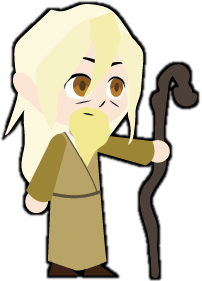

Sage
"Guide the future to the truth"
The sage is a wise individual with experience. They have already been through the journey and it is their turn to teach and nurture the next generation. As a result, they tend to know the truth and have the choice to hide or reveal it to the inexperienced. Their experience can lead them to become traumatized or bitter, with some not willing to adapt to the new ways. Despite this, the Sage can help the audience learn lessons and encourage them to teach the future.
Also known as:
- Expert
- Advisor
- Mentor
- Teacher
- Guardian
Qualities
- Wisdom
- Experience
- Collective
Flaws
- Caution
- Reluctance to Act
- Hardened from Experience
- Secretive